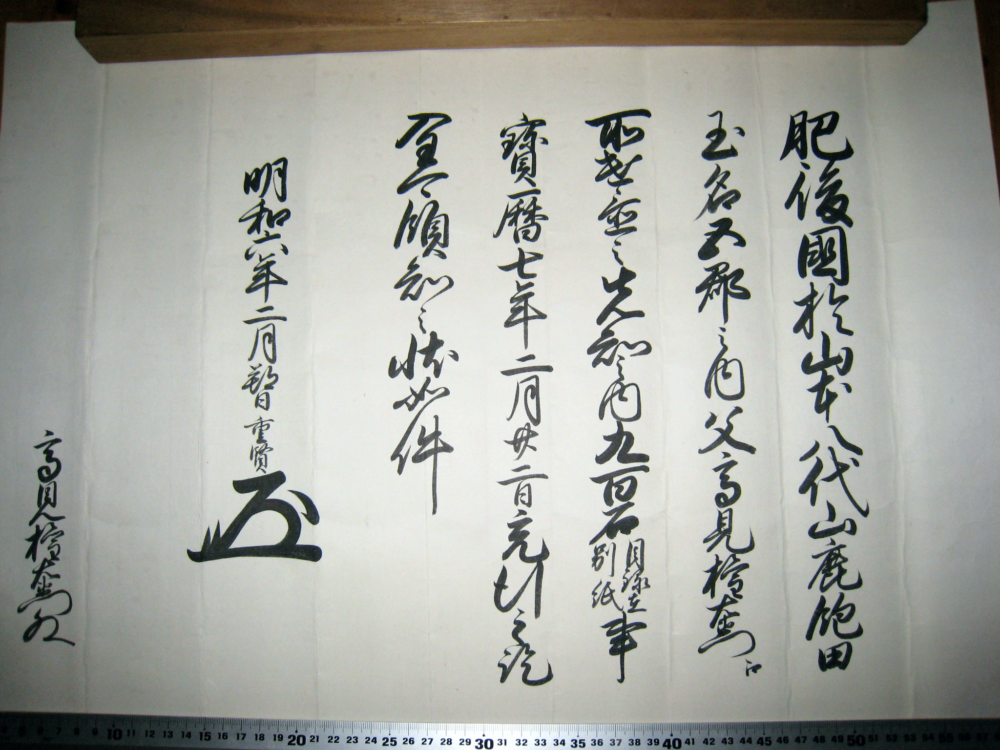
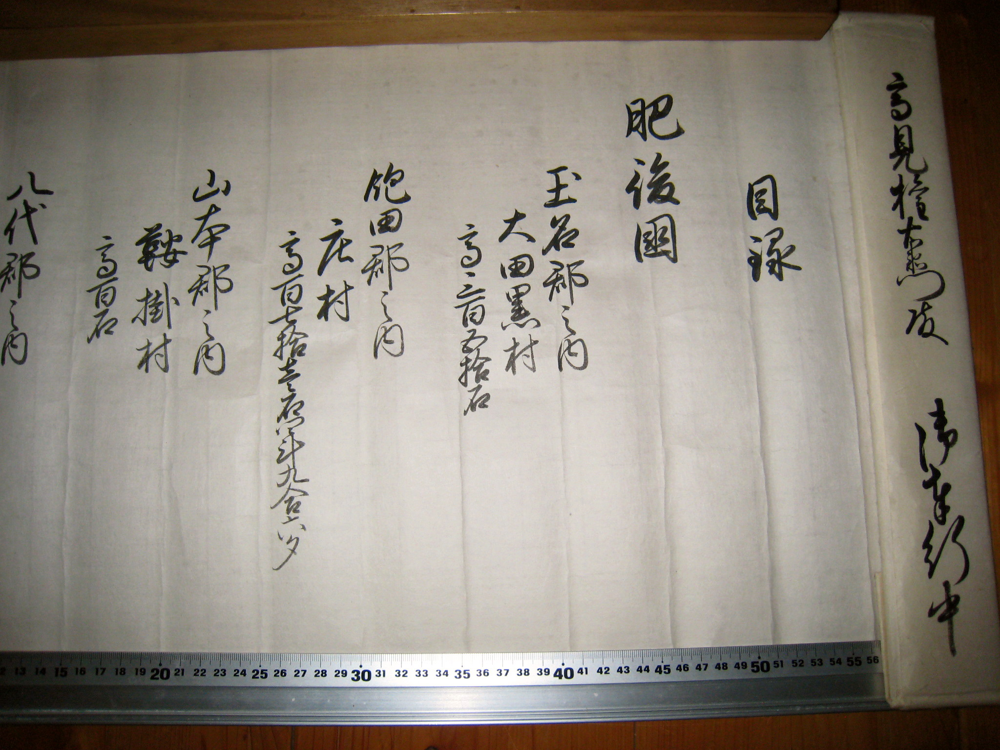
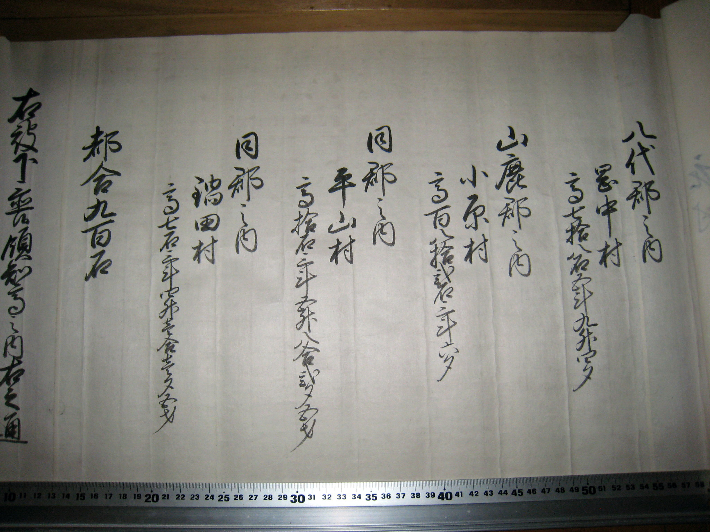
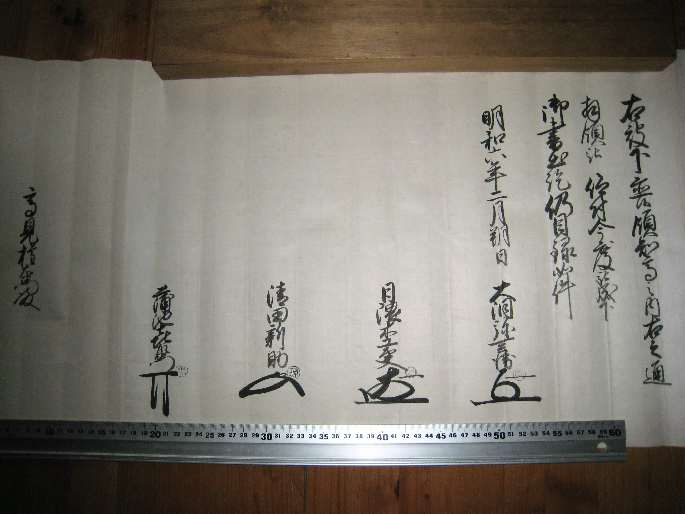

知行宛行状

|
肥後國於山本八代山鹿飽田 玉名之内父高見権右衛門江 取遣置之先知之間九百石目録在別紙事 寶暦七年二月二十二日充行之訖 全可領知之状如件 明和六年二月朔日 重賢（花押） 高見権右衛門殿 |
肥後の国山本、八代、山鹿、飽田、 玉名に於いてこの内父高見権右衛門へ 取りやり置きこれ先知のあいだ九百石 <目録別紙にあり>のこと 宝暦七年二月二十二日 これを宛がいおわんところ 全く領知すべきの状くだんの如し 明和六年二月朔日 重賢（花押） 高見権右衛門殿 |
目録

高見権右衛門殿 御奉行中 （包）
目録 肥後國
玉名郡之内 大田黒村 高三百五拾石
飽田郡之内 庄村 高百七拾壱石四斗九合六夕
山本郡之内 鞍掛村 高百石

八代郡之内 岡中村 高七拾八石五斗九升四夕
山鹿郡之内 小原村 高百八拾二石二斗六夕
同郡之内 平山村 高拾石三斗五升八合二夕五才
同郡之内 稲田村 高七石三斗四升壱合壱夕五才
都合九百石

右被下置領知高之内右之通
拝領被